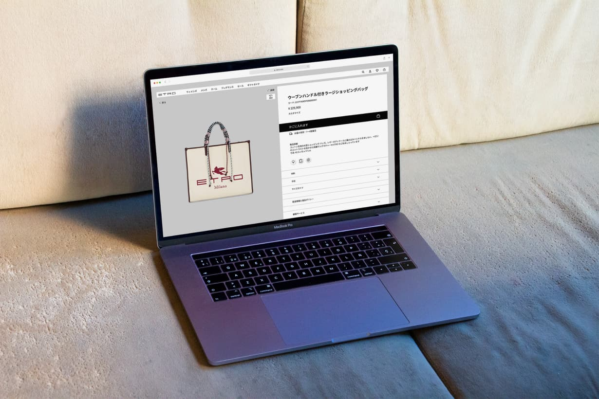

ETRO Website for Korea and Japan

Redesign proposal of ETRO's PLP and PDP aimed to respect the brand’s identity while making it consistent with Japanese and South Korean customers’ needs.
Project supervised by prof. Andrew Scupelli and Beatrice Bentivoglio Magner during the Digital Art Direction and Strategy subject.
Contributor: Helene Grimstad.